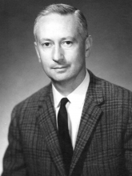

Please note: the AAS Obituaries are temporarily being hosted on this website while their full content is being ingested into the PubPub publishing platform newly adopted by the Bulletin of the American Astronomical Society. When the migration is complete, your existing links will take you to the final, migrated content. Contact peter.williams@aas.org with any questions.
Cornell H. Mayer (1921-2005)
Cornell (Connie) H. Mayer, a pioneer of radio astronomy, died on 19 November 2005 of congestive heart failure at his home in Mt. Vernon, Virginia. He was eighty-three.
Cornell Mayer was born in Ossian, Iowa on 10 December 1921. After graduating from the University of Iowa in 1943, he joined the Navy during World War II and was stationed at the Naval Research Laboratory (NRL) in Washington, DC. There he assisted Fred T. Haddock in the development of the first radar antenna inside a submarine periscope. This device has been credited with shortening the war in the Pacific because of the number of Japanese ships that were sunk with its aid. With Haddock, Connie also discovered centimeter-wave radio bursts from the sun coincident with solar flares. They made the first detection of thermal radio emission from the Orion nebula and other galactic HII regions. They also detected extragalactic objects and thus initiated the important field of centimeter-wave astronomy. Their observations were made with a 50-foot parabolic reflector on a gun mount located on the roof of one of the NRL buildings. This telescope had the world's highest radio resolving power for many years.
With Haddock's departure to the University of Michigan in 1956 to create a new radio observatory there, Connie became head of a group in the Radio Astronomy Branch at NRL, where he remained until his retirement in 1980. Much of his work involved the measurement of planetary temperatures by analysis of radio emissions. By making technical innovations in instrumentation--such as replacing disc choppers with a ferrite switch to compare the sky and reference load, or using argon gas tubes for calibration--Connie greatly improved the performance of his equipment. This resulted in the discovery of an astonishing, 600oC surface temperature of Venus, which contradicted the widespread notion that Venus was similar to the Earth and potentially habitable. In spite of the extraordinarily careful and systematic way that the observations were carried out and analyzed, many remained skeptical about the result and its interpretation in terms of a massive greenhouse effect, until the Mariner-II spacecraft fly-by in 1962, which put all such doubts to rest. Connie and his group continued to make radio observations of other planets and discovered a non-thermal centimeter wavelength emission from Jupiter. This led directly to work done at Caltech that demonstrated the existence of Van Allen-like belts around the planet.
Being a superb engineer, Connie firmly believed that technology led to scientific discovery. Like others, he was preoccupied with the improvement of the sensitivity of radio astronomy receivers, and applied physics to new designs. In 1959, Connie collaborated with Charles Townes and his students at Columbia in the first application of the maser to astronomy. When Townes received the 1964 Nobel Prize for the invention of the maser, he asserted that Connie's desire to improve receiver sensitivity was influential in his work and shared a portion of his prize money with him.
Connie's greatest contribution was in the study of non-thermal radio sources at very short wavelengths. Non-thermal sources were recognized by the fact that their flux density decreases with increasing frequency. If the emission mechanism were synchrotron radiation (as theorized in 1950), then the radiation should be linearly polarized up to a theoretical maximum of 70 percent. In 1949, John Bolton had identified a discrete radio source with the Crab Nebula optical counterpart. The optical radiation was known to contain a diffuse component with a featureless spectrum. The Russian astrophysicist Joseph Shklovsky boldly hypothesized that both the optical and radio emissions were due to the synchrotron mechanism. This implied that the optical radiation would be polarized, and Soviet scientists found it so in 1954. Soon after, the radio source Virgo A was matched with the peculiar galaxy M87, whose spectrally featureless optical jet was found to be polarized in 1956. Thus the crucial evidence in support of the synchrotron mechanism for both galactic and extragalactic radio sources was the detection of polarization in their optical radiation. The very next year, Connie and his collaborators showed that at a 3 cm wavelength, the Crab Nebula was substantially polarized (8%) at a position angle close to that of the optical direction. The hundreds of pixels obtainable in the optical, as opposed to only one in the NRL 3 cm observation, enabled the variation of position angle with sky position to be measured. Five years later, the NRL group, succeeded in measuring the first polarization in two extragalactic radio sources, Cygnus A and Centaurus A, at 3 cm. Later measurements at slightly longer wavelengths showed that polarization must be common in synchrotron sources, but that the amount decreased rapidly with increasing wavelength.
It was already evident from the NRL measurements that Faraday rotation was important, and it was also clear that increased resolution would be required to remove the effects of averaging over distributions with varying position angles. This led Connie to build receivers at even shorter wavelengths and to use them on larger telescopes than NRL's. The most spectacular results were obtained in 1966 with a 1.55 cm receiver on the NRAO 140-ft reflector at Green Bank, which provided a beam width of only 1?:7. They found that the Crab Nebula had a distribution of polarization similar to that observed optically, reaching up to 16%. Internal Faraday rotation was clearly required to explain the rapid depolarization with increasing wavelength. For Cygnus A, they had just enough resolution to show that the two components of the double radio source were nearly orthogonally polarized.
Their most beautiful result was on the galactic supernova remnant Cassiopea A, where they found a remarkable circular circumferential symmetry in the polarization vectors, explaining why previous work with poorer resolution indicated no polarization. Most importantly they recognized that the implied radial field "suggests that the magnetic field has been carried out with the expansion of the supernova envelope, and...[they] observe[d] polarized radiation associated with a component which has been stretched out in the radial direction during the expansion of the shell." This landmark paper led the way for later polarimetric studies of both galactic and extragalactic radio sources. Observations two decades later with the VLA (the world's most powerful, synthesis radio telescope with a quarter million pixels to each one of Connie's), substantiated most or all of his early conclusions, and was a tribute to his pioneering effort.
The NRL group was later involved in discoveries about the variability of interstellar water and SiO masers, the structure of molecular clouds and star forming regions, the development of techniques for precision time transfer, remote sensing of the ocean and atmosphere, and much else, but in the aforementioned radio astronomy work, Connie Mayer had no peer. A colleague remarked, "Connie was among the last of the scientist-engineers who built their own equipment, performed their own experiments, and also interpreted the results into paradigm shifting science."
Connie was a rare and noble example of natural modesty, becoming uncomfortable if anyone praised him. After his death, his wife found many awards that he had received but never framed nor told her about. He joked that he did not want a formal funeral "with a lot of people getting up and mouthing off about me." He received full military honor services at Arlington National Cemetery, but was cremated as per his wishes. He is survived by Carey Whitehead Mayer, his wife of fifty-six years, and their daughter, Carolyn Elizabeth Mayer. Their son, John, died in 1978.
Obituary written by: Venkataraman Radhakrishnan (Raman Research Institute, Bangalore, India)
BAAS Citation: BAAS, 2006, 38, 1279
SAO/NASA ADS Bibcode: 2006BAAS...38.1279R